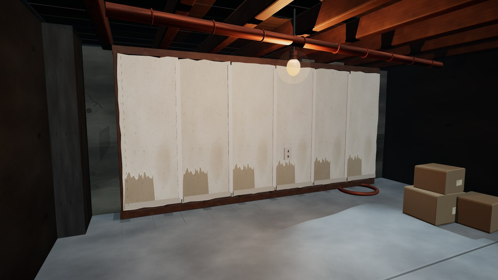

Offline three.js study
Basement wall: 3D film (demo)
A deterministic 3D illustration of a basement wall being stripped back to the concrete, a drain trench opened and a drainage membrane fitted.
Normal playback
3D illustration, not to scale

3D illustration, not to scale
01 / Finished wallA drywall-clad stud wall along the foundation.
02 / Strip the wallPanels and insulation come away from the studs.
03 / Open the trenchThe slab edge is cut and a drain pipe is laid in gravel.
04 / MembraneA dimpled drainage membrane covers the foundation wall.
The scene is generated from procedural geometry and textures. No client footage or reference-site media is used.